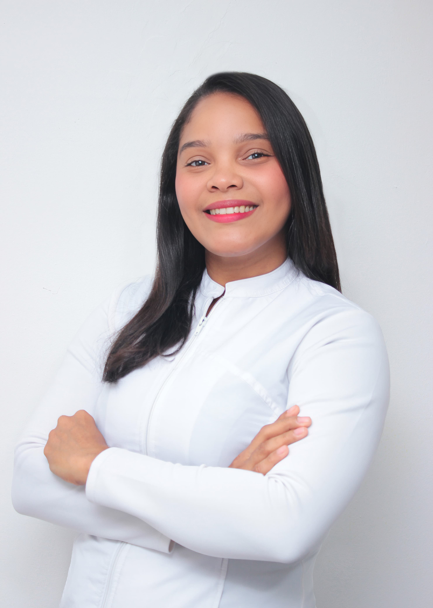

Cirujana Ortopédica • Especialista en Traumatología Articular
Graduada con honores y con especialización en procedimientos de reconstrucción articular y artroscopia de mínima invasión. Mi enfoque combina técnicas quirúrgicas de vanguardia con un trato humano y personalizado, enfocado en reducir los tiempos de recuperación y devolver la movilidad a mis pacientes.